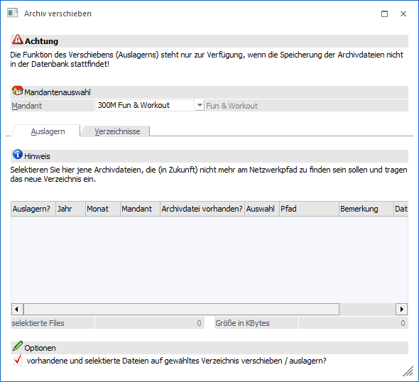
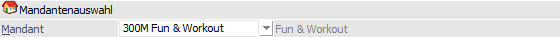
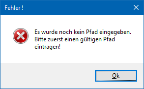
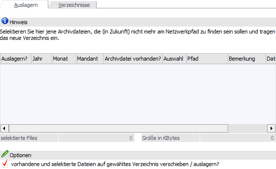
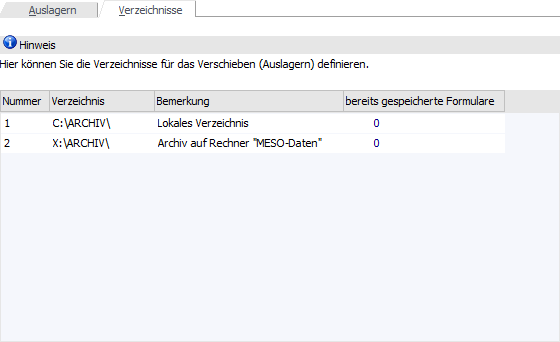
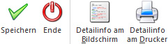

Über den Menüpunkt…
1 WinLine ADMIN
1 Archiv
1 Archivdateien verschieben
… gibt es die Möglichkeit, vorhandene Archivdateien in alternative Verzeichnisse oder auf andere Platten bzw. Medien auszulagern. Dies hat den Zweck, dass das Original Archivverzeichnis nicht zu "voll" wird.
Achtung
Wenn die Option "Archivdateien in Datenbank speichern" in den Archiv - Parametern aktiviert wurde (Standard), dann werden die Archivdokumente direkt am SQL-Server in die Tabelle T495CMP (System- oder Archivdatenbank) komprimiert abgespeichert. In solch einem Fall gibt es keine Archivverzeichnisse mit Inhalt und die Nutzung dieses Programms ist nicht notwendig bzw. bringt kein Ergebnis!

Mandantenauswahl

Ø Mandant
Aus der Auswahlliste kann der Mandant ausgewählt werden, für welchen die Auslagerung seiner Archivdokumente durchgeführt werden sollen. Nach Bestätigung der Mandantennummer werden in der Tabelle des Registers "Auslagern" alle vorhandenen Archivdateien des Mandanten angezeigt.
Hinweis
Wenn noch kein(e) Verzeichnis(se) für eine Auslagerung hinterlegt wurde(n), so erscheint nach Auswahl des Mandanten die folgende Meldung:

Anschließend wird man in das Register "Verzeichnisse" geführt, in welchem das bzw. die Auslagerungsverzeichnisse angegeben werden müssen.
Register "Auslagern"

Ø Auslagern?
Wird die Checkbox aktiviert, bedeutet das, dass die Archivdatei (ZIP-Datei) verschoben wird.
Ø Jahr / Monat / Mandant
In diesen drei Spalten wird die Jahreszahl, das Monat und die Mandantennummer der Archivdatei angezeigt. Diese Felder können nicht verändert werden und dienen nur der Information.
Ø Archivdatei vorhanden
Standardmäßig wird hier "Ja" angezeigt. Ausnahme: Wenn die Archivdatei (SPA-Datei) entfernt (nicht verschoben) wurde und sie somit nicht mehr gefunden werden kann.
Ø Auswahl
Aus der Auswahlliste kann ein Verzeichnis gewählt werden, in welches die Archivdatei verschoben werden soll. Welche Verzeichnisse zur Verfügung stehen, kann im Register "Verzeichnisse" gesteuert werden. Das gewählte Verzeichnis wird im Feld "Pfad" angezeigt, die Bemerkung wird ebenfalls von den voreingestellten Verzeichnissen übernommen.
Ø Dateigröße
Hier wird die Größe der Archivdatei (SPA-Datei) angezeigt.
Hinweis
Wurden Archivdateien ausgewählt, so wird die Anzahl der selektierten Archivdateien und die Gesamtgröße unterhalb der Tabelle angezeigt.
Ø vorhandene und selektierte Dateien auf gewählten Pfad verschieben / auslagern?
Wird diese Checkbox aktiviert, dann werden die ausgewählten Archivdateien in die gewünschten Verzeichnisse verschoben. Bleibt die Checkbox inaktiv, dann wird zwar das neue Verzeichnis gemerkt, man muss sich aber selbst darum kümmern, dass die Archivdatei in das entsprechende Verzeichnis gelangt (z.B. wenn als Verzeichnis ein CD-ROM-Laufwerk gewählt wurde, dann kann die Archivdatei nicht über das Programm dorthin verschoben werden, sondern die CD muss selbst erstellt werden).
Register "Verzeichnisse"

Im Register "Verzeichnisse" können Verzeichnisse bestimmt werden, in denen die Archivdateien gespeichert werden sollen. Dabei können beliebig viele Verzeichnisse angelegt werden. Als Nummer 1 wird immer das aktuelle Programmverzeichnis vorgeschlagen.
Achtung
Wenn einmal eine Archivdatei auf ein hier eingetragenes Verzeichnis verschoben wurde, dann sollte dieses Verzeichnis nicht mehr geändert werden, da es sonst dazu kommen kann, dass die gewünschten Einträge nicht mehr gefunden werden.
Ø Nummer
Die Nummer wird vom Programm automatisch vergeben und dient als eindeutiges Kennzeichen in der Tabelle "Auslagern".
Ø Verzeichnis
Hier kann ein beliebiges Verzeichnis eingetragen werden. Durch Drücken der F9-Taste kann nach allen vorhandenen Verzeichnissen gesucht werden. Es ist darauf zu achten, dass nur gemappte Verzeichnisse z.B. W:\ARCHIV (also keine UNC-Verzeichnisse z.B. \\SERVER\ARCHIV) verwendet werden können.
Ø Bemerkung
In diesem Feld kann eine Bemerkung zum Verzeichnis eingetragen werden. Diese Bemerkung wird auch in die Tabelle "Auslagern" übernommen.
Ø Bereits gespeicherte Formulare
In dieser Spalte wird die Anzahl der Formulare angezeigt, die bereits in diesem Verzeichnis ausgelagert bzw. gespeichert wurden.
Buttons

Ø Speichern
Durch Anklicken des Buttons "Speichern" bzw. der Taste F5 werden alle Eingaben gespeichert und die Aktionen gemäß den Einstellungen durchgeführt.
Ø Ende
Durch Anwahl des Buttons "Ende" wird das Fenster geschlossen und alle nicht gespeicherten Eingaben verworfen.
Ø Detailinfo am Bildschirm (nur im Register "Verzeichnisse")
Durch Anklicken des Buttons "Detailinfo am Bildschirm" kann eine Liste am Bildschirm ausgegeben werden, in welcher alle vorhandenen Archivdateien aller angelegten Verzeichnisse aufgelistet werden.
Ø Detailinfo am Drucker (nur im Register "Verzeichnisse")
Durch Anklicken des Buttons "Detailinfo am Drucker" kann eine Liste auf den Drucker ausgegeben werden, in welcher alle vorhandenen Archivdateien aller angelegten Verzeichnisse aufgelistet werden.